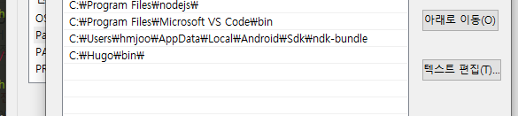
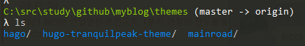
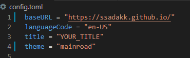
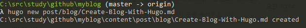
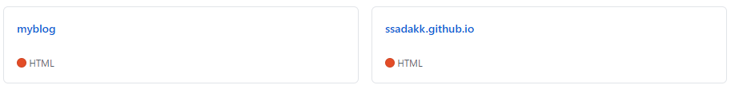

Hugo 를 이용해 github.io 블로그 생성하는 방법
Hugo, Github 블로그 생성
Category: etc
윈도우 설치 과정 기술, Mac 의 경우에는 나중에 추가
1. Git 설치
- git download link : [https://git-scm.com/](https://git-scm.com/)
- 설치 후 git —version 통해 설치되었는지 확인

2. Hugo 설치
-
Hugo download link : https://github.com/gohugoio/hugo/releases
-
Hugo 다운로드 후에 c:\hugo\bin 에 풀기 ( 다른데 풀어도 됨. 환경 변수 등록만 잘 해주면 된다)
-
Window키 + Q → 시스템 환경 변수 편집 선택 → 환경변수 → 아래 화면처럼 등록

3. Hugo project 만들기
- 프로젝트 폴더를 정함. (나의 경우 C:\src\study\github)
- $hugo new site 프로젝트 이름 (나의 경우 myblog)
- 생성하면 프로젝트 폴더가 생기고 안에 파일들이 생김
4. 테마 다운 및 복사
-
https://themes.gohugo.io/ 등 Hugo theme 이 리스팅 되어있는 다양한 사이트 있음. 그런곳에서 맘에 든 테마를 선택
-
git clone [theme의 git 주소] → [] 은 입력하지 말것
-
메인 프로젝트의 theme 폴더에 다운받은 테마를 복사, 아래처럼 theme 폴더 아래 테마 폴더 생기도록

-
테마를 이제 적용해야됨, 메인 폴더의 config.toml 파일을 열어서 아래처럼 theme = “테마 이름"을 적용. 나의 경우엔 mainroad 를 적용

5. 글쓰기
-
hugo new filename.md 로 글을 생성할수 있음.

-
hugo server -D (draft 파일도 포함해 보여주겠다는 뜻)
-
https://localhost:1313 으로 접속하면 로컬 webserver 이용해 확인할 수 있음
6. 배포
-
배포하려면, 2개의 Github repo 필요함.
-
전체 파일이 들어갈 것은 마음대로 생성, 실제 보일 페이지가 저장되는 곳은 레포 이름을 다음과 같이 설정. “본인아이디”.github.io 아래처럼.

그다음 아래순서로 진행
- 전체프로젝트 폴더로 가서
- git init
- git remote add origin [전체 프로젝트 repo url]
- git submodule add -b master [xxx.github.io repo url]
그다음 빌드
- hugo -t [테마이름]
- 빌드하면 public 폴더에 빌드 결과가 저장, 결과를 git repo 에 푸쉬하면 됨.
repo push
- cd public
- git add *
- git commit -m “commit message”
- git push origin master
- cd ..
- git add *
- git commit -m “commit message”
- git push origin master
- 이렇게 하면 차례대로 public 폴더 파일을 push 하고 프로젝트 전체를 push 하게됨
이렇게 하면 githubid.github.io 에 조금 지나서 들어가보면 내가만든 페이지가 보일것!
7. 다른 컴퓨터에 환경 설정
git clone https://github.com/[github-ID]/blog.git
submodule 재구성 (re init submodule)
git submodule update --init --recursive
submodule 갱신하기
git submodule update --recursive --remote